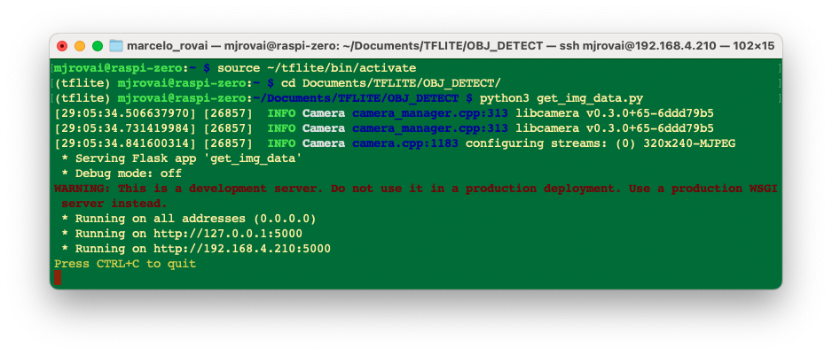

Object Detection
![DALL·E prompt - A cover image for an ‘Object Detection’ chapter in a Raspberry Pi tutorial, designed in the same vintage 1950s electronics lab style as previous covers. The scene should prominently feature wheels and cubes, similar to those provided by the user, placed on a workbench in the foreground. A Raspberry Pi with a connected camera module should be capturing an image of these objects. Surround the scene with classic lab tools like soldering irons, resistors, and wires. The lab background should include vintage equipment like oscilloscopes and tube radios, maintaining the detailed and nostalgic feel of the era. No text or logos should be included.](images/jpeg/cover.jpg)
Overview
Building upon our exploration of image classification, we now turn our attention to a more advanced computer vision task: object detection. While image classification assigns a single label to an entire image, object detection goes further by identifying and locating multiple objects within a single image. This capability opens up many new applications and challenges, particularly in edge computing and IoT devices like the Raspberry Pi.
Object detection combines the tasks of classification and localization. It not only determines what objects are present in an image but also pinpoints their locations by, for example, drawing bounding boxes around them. This added complexity makes object detection a more powerful tool for understanding visual scenes, but it also requires more sophisticated models and training techniques.
In edge AI, where we work with constrained computational resources, implementing efficient object detection models becomes crucial. The challenges we faced with image classification—balancing model size, inference speed, and accuracy—are amplified in object detection. However, the rewards are also more significant, as object detection enables more nuanced and detailed visual data analysis.
Some applications of object detection on edge devices include:
- Surveillance and security systems
- Autonomous vehicles and drones
- Industrial quality control
- Wildlife monitoring
- Augmented reality applications
As we put our hands into object detection, we’ll build upon the concepts and techniques we explored in image classification. We’ll examine popular object detection architectures designed for efficiency, such as:
- Single Stage Detectors, such as MobileNet and EfficientDet,
- FOMO (Faster Objects, More Objects), and
- YOLO (You Only Look Once).
To learn more about object detection models, follow the tutorial A Gentle Introduction to Object Recognition With Deep Learning.
We will explore those object detection models using
- TensorFlow Lite Runtime (now changed to LiteRT),
- Edge Impulse Linux Python SDK and
- Ultralitics

Throughout this lab, we’ll cover the fundamentals of object detection and how it differs from image classification. We’ll also learn how to train, fine-tune, test, optimize, and deploy popular object detection architectures using a dataset created from scratch.
Object Detection Fundamentals
Object detection builds upon the foundations of image classification but extends its capabilities significantly. To understand object detection, it’s crucial first to recognize its key differences from image classification:
Image Classification vs. Object Detection
Image Classification:
- Assigns a single label to an entire image
- Answers the question: “What is this image’s primary object or scene?”
- Outputs a single class prediction for the whole image
Object Detection:
- Identifies and locates multiple objects within an image
- Answers the questions: “What objects are in this image, and where are they located?”
- Outputs multiple predictions, each consisting of a class label and a bounding box
To visualize this difference, let’s consider an example: 
This diagram illustrates the critical difference: image classification provides a single label for the entire image, while object detection identifies multiple objects, their classes, and their locations within the image.
Key Components of Object Detection
Object detection systems typically consist of two main components:
Object Localization: This component identifies where objects are located in the image. It typically outputs bounding boxes, rectangular regions encompassing each detected object.
Object Classification: This component determines the class or category of each detected object, similar to image classification but applied to each localized region.
Challenges in Object Detection
Object detection presents several challenges beyond those of image classification:
- Multiple objects: An image may contain multiple objects of various classes, sizes, and positions.
- Varying scales: Objects can appear at different sizes within the image.
- Occlusion: Objects may be partially hidden or overlapping.
- Background clutter: Distinguishing objects from complex backgrounds can be challenging.
- Real-time performance: Many applications require fast inference times, especially on edge devices.
Approaches to Object Detection
There are two main approaches to object detection:
Two-stage detectors: These first propose regions of interest and then classify each region. Examples include R-CNN and its variants (Fast R-CNN, Faster R-CNN).
Single-stage detectors: These predict bounding boxes (or centroids) and class probabilities in one forward pass of the network. Examples include YOLO (You Only Look Once), EfficientDet, SSD (Single Shot Detector), and FOMO (Faster Objects, More Objects). These are often faster and more suitable for edge devices like Raspberry Pi.
Evaluation Metrics
Object detection uses different metrics compared to image classification:
- Intersection over Union (IoU): Measures the overlap between predicted and ground truth bounding boxes.
- Mean Average Precision (mAP): Combines precision and recall across all classes and IoU thresholds.
- Frames Per Second (FPS): Measures detection speed, crucial for real-time applications on edge devices.
Pre-Trained Object Detection Models Overview
As we saw in the introduction, given an image or a video stream, an object detection model can identify which of a known set of objects might be present and provide information about their positions within the image.
You can test some common models online by visiting Object Detection - MediaPipe Studio
On Kaggle, we can find the most common pre-trained tflite models to use with the Raspi, ssd_mobilenet_v1, and EfficientDet. Those models were trained on the COCO (Common Objects in Context) dataset, with over 200,000 labeled images in 91 categories. Go, download the models, and upload them to the ./models folder in the Raspi.
Alternatively, you can find the models and the COCO labels on GitHub.
For the first part of this lab, we will focus on a pre-trained 300x300 SSD-Mobilenet V1 model and compare it with the 320x320 EfficientDet-lite0, also trained using the COCO 2017 dataset. Both models were converted to a TensorFlow Lite format (4.2MB for the SSD Mobilenet and 4.6MB for the EfficientDet).
SSD-Mobilenet V2 or V3 is recommended for transfer learning projects, but once the V1 TFLite model is publicly available, we will use it for this overview.

Setting Up the TFLite Environment
We should confirm the steps done on the last Hands-On Lab, Image Classification, as follows:
Updating the Raspberry Pi
Installing Required Libraries
Setting up a Virtual Environment (Optional but Recommended)
source ~/tflite/bin/activateInstalling TensorFlow Lite Runtime
Installing Additional Python Libraries (inside the environment)
Creating a Working Directory:
Considering that we have created the Documents/TFLITE folder in the last Lab, let’s now create the specific folders for this object detection lab:
cd Documents/TFLITE/
mkdir OBJ_DETECT
cd OBJ_DETECT
mkdir images
mkdir models
cd modelsInference and Post-Processing
Let’s start a new notebook to follow all the steps to detect objects on an image:
Import the needed libraries:
import time
import numpy as np
import matplotlib.pyplot as plt
from PIL import Image
import tflite_runtime.interpreter as tfliteLoad the TFLite model and allocate tensors:
model_path = "./models/ssd-mobilenet-v1-tflite-default-v1.tflite"
interpreter = tflite.Interpreter(model_path=model_path)
interpreter.allocate_tensors()Get input and output tensors.
input_details = interpreter.get_input_details()
output_details = interpreter.get_output_details()Input details will inform us how the model should be fed with an image. The shape of (1, 300, 300, 3) with a dtype of uint8 tells us that a non-normalized (pixel value range from 0 to 255) image with dimensions (300x300x3) should be input one by one (Batch Dimension: 1).
The output details include not only the labels (“classes”) and probabilities (“scores”) but also the relative window position of the bounding boxes (“boxes”) about where the object is located on the image and the number of detected objects (“num_detections”). The output details also tell us that the model can detect a maximum of 10 objects in the image.

So, for the above example, using the same cat image used with the Image Classification Lab looking for the output, we have a 76% probability of having found an object with a class ID of 16 on an area delimited by a bounding box of [0.028011084, 0.020121813, 0.9886069, 0.802299]. Those four numbers are related to ymin, xmin, ymax and xmax, the box coordinates.
Taking into consideration that y goes from the top (ymin) to the bottom (ymax) and x goes from left (xmin) to the right (xmax), we have, in fact, the coordinates of the top/left corner and the bottom/right one. With both edges and knowing the shape of the picture, it is possible to draw a rectangle around the object, as shown in the figure below:

Next, we should find what class ID equal to 16 means. Opening the file coco_labels.txt, as a list, each element has an associated index, and inspecting index 16, we get, as expected, cat. The probability is the value returning from the score.
Let’s now upload some images with multiple objects on it for testing.
img_path = "./images/cat_dog.jpeg"
orig_img = Image.open(img_path)
# Display the image
plt.figure(figsize=(8, 8))
plt.imshow(orig_img)
plt.title("Original Image")
plt.show()
Based on the input details, let’s pre-process the image, changing its shape and expanding its dimension:
img = orig_img.resize((input_details[0]['shape'][1],
input_details[0]['shape'][2]))
input_data = np.expand_dims(img, axis=0)
input_data.shape, input_data.dtype The new input_data shape is(1, 300, 300, 3) with a dtype of uint8, which is compatible with what the model expects.
Using the input_data, let’s run the interpreter, measure the latency, and get the output:
start_time = time.time()
interpreter.set_tensor(input_details[0]['index'], input_data)
interpreter.invoke()
end_time = time.time()
inference_time = (end_time - start_time) * 1000 # Convert to milliseconds
print ("Inference time: {:.1f}ms".format(inference_time))With a latency of around 800ms, we can get 4 distinct outputs:
boxes = interpreter.get_tensor(output_details[0]['index'])[0]
classes = interpreter.get_tensor(output_details[1]['index'])[0]
scores = interpreter.get_tensor(output_details[2]['index'])[0]
num_detections = int(interpreter.get_tensor(output_details[3]['index'])[0])On a quick inspection, we can see that the model detected 2 objects with a score over 0.5:
for i in range(num_detections):
if scores[i] > 0.5: # Confidence threshold
print(f"Object {i}:")
print(f" Bounding Box: {boxes[i]}")
print(f" Confidence: {scores[i]}")
print(f" Class: {classes[i]}")
And we can also visualize the results:
plt.figure(figsize=(12, 8))
plt.imshow(orig_img)
for i in range(num_detections):
if scores[i] > 0.5: # Adjust threshold as needed
ymin, xmin, ymax, xmax = boxes[i]
(left, right, top, bottom) = (xmin * orig_img.width,
xmax * orig_img.width,
ymin * orig_img.height,
ymax * orig_img.height)
rect = plt.Rectangle((left, top), right-left, bottom-top,
fill=False, color='red', linewidth=2)
plt.gca().add_patch(rect)
class_id = int(classes[i])
class_name = labels[class_id]
plt.text(left, top-10, f'{class_name}: {scores[i]:.2f}',
color='red', fontsize=12, backgroundcolor='white')
EfficientDet
EfficientDet is not technically an SSD (Single Shot Detector) model, but it shares some similarities and builds upon ideas from SSD and other object detection architectures:
- EfficientDet:
- Developed by Google researchers in 2019
- Uses EfficientNet as the backbone network
- Employs a novel bi-directional feature pyramid network (BiFPN)
- It uses compound scaling to scale the backbone network and the object detection components efficiently.
- Similarities to SSD:
- Both are single-stage detectors, meaning they perform object localization and classification in a single forward pass.
- Both use multi-scale feature maps to detect objects at different scales.
- Key differences:
- Backbone: SSD typically uses VGG or MobileNet, while EfficientDet uses EfficientNet.
- Feature fusion: SSD uses a simple feature pyramid, while EfficientDet uses the more advanced BiFPN.
- Scaling method: EfficientDet introduces compound scaling for all components of the network
- Advantages of EfficientDet:
- Generally achieves better accuracy-efficiency trade-offs than SSD and many other object detection models.
- More flexible scaling allows for a family of models with different size-performance trade-offs.
While EfficientDet is not an SSD model, it can be seen as an evolution of single-stage detection architectures, incorporating more advanced techniques to improve efficiency and accuracy. When using EfficientDet, we can expect similar output structures to SSD (e.g., bounding boxes and class scores).
On GitHub, you can find another notebook exploring the EfficientDet model that we did with SSD MobileNet.
Object Detection Project
Now, we will develop a complete Image Classification project from data collection to training and deployment. As we did with the Image Classification project, the trained and converted model will be used for inference.
We will use the same dataset to train 3 models: SSD-MobileNet V2, FOMO, and YOLO.
The Goal
All Machine Learning projects need to start with a goal. Let’s assume we are in an industrial facility and must sort and count wheels and special boxes.

In other words, we should perform a multi-label classification, where each image can have three classes:
Background (no objects)
Box
Wheel
Raw Data Collection
Once we have defined our Machine Learning project goal, the next and most crucial step is collecting the dataset. We can use a phone, the Raspi, or a mix to create the raw dataset (with no labels). Let’s use the simple web app on our Raspberry Pi to view the QVGA (320 x 240) captured images in a browser.
From GitHub, get the Python script get_img_data.py and open it in the terminal:
python3 get_img_data.py Access the web interface:
- On the Raspberry Pi itself (if you have a GUI): Open a web browser and go to
http://localhost:5000 - From another device on the same network: Open a web browser and go to
http://<raspberry_pi_ip>:5000(Replace<raspberry_pi_ip>with your Raspberry Pi’s IP address). For example:http://192.168.4.210:5000/
The Python script creates a web-based interface for capturing and organizing image datasets using a Raspberry Pi and its camera. It’s handy for machine learning projects that require labeled image data or not, as in our case here.
Access the web interface from a browser, enter a generic label for the images you want to capture, and press Start Capture.

Note that the images to be captured will have multiple labels that should be defined later.
Use the live preview to position the camera and click Capture Image to save images under the current label (in this case, box-wheel.

When we have enough images, we can press Stop Capture. The captured images are saved on the folder dataset/box-wheel:

Get around 60 images. Try to capture different angles, backgrounds, and light conditions. Filezilla can transfer the created raw dataset to your main computer.
Labeling Data
The next step in an Object Detect project is to create a labeled dataset. We should label the raw dataset images, creating bounding boxes around each picture’s objects (box and wheel). We can use labeling tools like LabelImg, CVAT, Roboflow, or even the Edge Impulse Studio. Once we have explored the Edge Impulse tool in other labs, let’s use Roboflow here.
We are using Roboflow (free version) here for two main reasons. 1) We can have auto-labeler, and 2) The annotated dataset is available in several formats and can be used both on Edge Impulse Studio (we will use it for MobileNet V2 and FOMO train) and on CoLab (YOLOv8 train), for example. Having the annotated dataset on Edge Impulse (Free account), it is not possible to use it for training on other platforms.
We should upload the raw dataset to Roboflow. Create a free account there and start a new project, for example, (“box-versus-wheel”).
{kind=link}
We will not enter in deep details about the Roboflow process once many tutorials are available.
Annotate
Once the project is created and the dataset is uploaded, you should make the annotations using the “Auto-Label” Tool. Note that you can also upload images with only a background, which should be saved w/o any annotations.

Once all images are annotated, you should split them into training, validation, and testing.

Data Pre-Processing
The last step with the dataset is preprocessing to generate a final version for training. Let’s resize all images to 320x320 and generate augmented versions of each image (augmentation) to create new training examples from which our model can learn.
For augmentation, we will rotate the images (+/-15o), crop, and vary the brightness and exposure.

At the end of the process, we will have 153 images.

Now, you should export the annotated dataset in a format that Edge Impulse, Ultralitics, and other frameworks/tools understand, for example, YOLOv8. Let’s download a zipped version of the dataset to our desktop.

Here, it is possible to review how the dataset was structured

There are 3 separate folders, one for each split (train/test/valid). For each of them, there are 2 subfolders, images, and labels. The pictures are stored as image_id.jpg and images_id.txt, where “image_id” is unique for every picture.
The labels file format will be class_id bounding box coordinates, where in our case, class_id will be 0 for box and 1 for wheel. The numerical id (o, 1, 2…) will follow the alphabetical order of the class name.
The data.yaml file has info about the dataset as the classes’ names (names: ['box', 'wheel']) following the YOLO format.
And that’s it! We are ready to start training using the Edge Impulse Studio (as we will do in the following step), Ultralytics (as we will when discussing YOLO), or even training from scratch on CoLab (as we did with the Cifar-10 dataset on the Image Classification lab).
The pre-processed dataset can be found at the Roboflow site, or here:

Training an SSD MobileNet Model on Edge Impulse Studio
Go to Edge Impulse Studio, enter your credentials at Login (or create an account), and start a new project.
Here, you can clone the project developed for this hands-on lab: Raspi - Object Detection.
On the Project Dashboard tab, go down and on Project info, and for Labeling method select Bounding boxes (object detection)
Uploading the annotated data
On Studio, go to the Data acquisition tab, and on the UPLOAD DATA section, upload from your computer the raw dataset.
We can use the option Select a folder, choosing, for example, the folder train in your computer, which contains two sub-folders, images, and labels. Select the Image label format, “YOLO TXT”, upload into the caegory Training, and press Upload data.

Repeat the process for the test data (upload both folders, test, and validation). At the end of the upload process, you should end with the annotated dataset of 153 images split in the train/test (84%/16%).
Note that labels will be stored at the labels files
0and1, which are equivalent toboxandwheel.
{kind=link}
The Impulse Design
The first thing to define when we enter the Create impulse step is to describe the target device for deployment. A pop-up window will appear. We will select Raspberry 4, an intermediary device between the Raspi-Zero and the Raspi-5.
This choice will not interfere with the training; it will only give us an idea about the latency of the model on that specific target.
{kind=link}
In this phase, you should define how to:
Pre-processing consists of resizing the individual images. In our case, the images were pre-processed on Roboflow, to
320x320, so let’s keep it. The resize will not matter here because the images are already squared. If you upload a rectangular image, squash it (squared form, without cropping). Afterward, you could define if the images are converted from RGB to Grayscale or not.Design a Model, in this case, “Object Detection.”

Preprocessing all dataset
In the section Image, select Color depth as RGB, and press Save parameters.

The Studio moves automatically to the next section, Generate features, where all samples will be pre-processed, resulting in 480 objects: 207 boxes and 273 wheels.

The feature explorer shows that all samples evidence a good separation after the feature generation.
Model Design, Training, and Test
For training, we should select a pre-trained model. Let’s use the MobileNetV2 SSD FPN-Lite (320x320 only) . It is a pre-trained object detection model designed to locate up to 10 objects within an image, outputting a bounding box for each object detected. The model is around 3.7MB in size. It supports an RGB input at 320x320px.
Regarding the training hyper-parameters, the model will be trained with:
- Epochs: 25
- Batch size: 32
- Learning Rate: 0.15.
For validation during training, 20% of the dataset (validation_dataset) will be spared.

As a result, the model ends with an overall precision score (based on COCO mAP) of 88.8%, higher than the result when using the test data (83.3%).
Deploying the model
We have two ways to deploy our model:
- TFLite model, which lets deploy the trained model as
.tflitefor the Raspi to run it using Python. - Linux (AARCH64), a binary for Linux (AARCH64), implements the Edge Impulse Linux protocol, which lets us run our models on any Linux-based development board, with SDKs for Python, for example. See the documentation for more information and setup instructions.
Let’s deploy the TFLite model. On the Dashboard tab, go to Transfer learning model (int8 quantized) and click on the download icon:
{kind=link}
Transfer the model from your computer to the Raspi folder./models and capture or get some images for inference and save them in the folder ./images.
Inference and Post-Processing
The inference can be made as discussed in the Pre-Trained Object Detection Models Overview. Let’s start a new notebook to follow all the steps to detect cubes and wheels on an image.
Import the needed libraries:
import time
import numpy as np
import matplotlib.pyplot as plt
import matplotlib.patches as patches
from PIL import Image
import tflite_runtime.interpreter as tfliteDefine the model path and labels:
model_path = "./models/ei-raspi-object-detection-SSD-MobileNetv2-320x0320-\
int8.lite"
labels = ['box', 'wheel']Remember that the model will output the class ID as values (0 and 1), following an alphabetic order regarding the class names.
Load the model, allocate the tensors, and get the input and output tensor details:
# Load the TFLite model
interpreter = tflite.Interpreter(model_path=model_path)
interpreter.allocate_tensors()
# Get input and output tensors
input_details = interpreter.get_input_details()
output_details = interpreter.get_output_details()One crucial difference to note is that the dtype of the input details of the model is now int8, which means that the input values go from -128 to +127, while each pixel of our raw image goes from 0 to 256. This means that we should pre-process the image to match it. We can check here:
input_dtype = input_details[0]['dtype']
input_dtypenumpy.int8So, let’s open the image and show it:
# Load the image
img_path = "./images/box_2_wheel_2.jpg"
orig_img = Image.open(img_path)
# Display the image
plt.figure(figsize=(6, 6))
plt.imshow(orig_img)
plt.title("Original Image")
plt.show(){kind=link}
And perform the pre-processing:
scale, zero_point = input_details[0]['quantization']
img = orig_img.resize((input_details[0]['shape'][1],
input_details[0]['shape'][2]))
img_array = np.array(img, dtype=np.float32) / 255.0
img_array = (img_array / scale + zero_point).clip(-128, 127).astype(np.int8)
input_data = np.expand_dims(img_array, axis=0)Checking the input data, we can verify that the input tensor is compatible with what is expected by the model:
input_data.shape, input_data.dtype((1, 320, 320, 3), dtype('int8'))Now, it is time to perform the inference. Let’s also calculate the latency of the model:
# Inference on Raspi-Zero
start_time = time.time()
interpreter.set_tensor(input_details[0]['index'], input_data)
interpreter.invoke()
end_time = time.time()
inference_time = (end_time - start_time) * 1000 # Convert to milliseconds
print ("Inference time: {:.1f}ms".format(inference_time))The model will take around 600ms to perform the inference in the Raspi-Zero, which is around 5 times longer than a Raspi-5.
Now, we can get the output classes of objects detected, its bounding boxes coordinates, and probabilities.
boxes = interpreter.get_tensor(output_details[1]['index'])[0]
classes = interpreter.get_tensor(output_details[3]['index'])[0]
scores = interpreter.get_tensor(output_details[0]['index'])[0]
num_detections = int(interpreter.get_tensor(output_details[2]['index'])[0])for i in range(num_detections):
if scores[i] > 0.5: # Confidence threshold
print(f"Object {i}:")
print(f" Bounding Box: {boxes[i]}")
print(f" Confidence: {scores[i]}")
print(f" Class: {classes[i]}")
From the results, we can see that 4 objects were detected: two with class ID 0 (box)and two with class ID 1 (wheel), what is correct!
Let’s visualize the result for a threshold of 0.5
threshold = 0.5
plt.figure(figsize=(6,6))
plt.imshow(orig_img)
for i in range(num_detections):
if scores[i] > threshold:
ymin, xmin, ymax, xmax = boxes[i]
(left, right, top, bottom) = (xmin * orig_img.width,
xmax * orig_img.width,
ymin * orig_img.height,
ymax * orig_img.height)
rect = plt.Rectangle((left, top), right-left, bottom-top,
fill=False, color='red', linewidth=2)
plt.gca().add_patch(rect)
class_id = int(classes[i])
class_name = labels[class_id]
plt.text(left, top-10, f'{class_name}: {scores[i]:.2f}',
color='red', fontsize=12, backgroundcolor='white'){kind=link}
But what happens if we reduce the threshold to 0.3, for example?

We start to see false positives and multiple detections, where the model detects the same object multiple times with different confidence levels and slightly different bounding boxes.
Commonly, sometimes, we need to adjust the threshold to smaller values to capture all objects, avoiding false negatives, which would lead to multiple detections.
To improve the detection results, we should implement Non-Maximum Suppression (NMS), which helps eliminate overlapping bounding boxes and keeps only the most confident detection.
For that, let’s create a general function named non_max_suppression(), with the role of refining object detection results by eliminating redundant and overlapping bounding boxes. It achieves this by iteratively selecting the detection with the highest confidence score and removing other significantly overlapping detections based on an Intersection over Union (IoU) threshold.
def non_max_suppression(boxes, scores, threshold):
# Convert to corner coordinates
x1 = boxes[:, 0]
y1 = boxes[:, 1]
x2 = boxes[:, 2]
y2 = boxes[:, 3]
areas = (x2 - x1 + 1) * (y2 - y1 + 1)
order = scores.argsort()[::-1]
keep = []
while order.size > 0:
i = order[0]
keep.append(i)
xx1 = np.maximum(x1[i], x1[order[1:]])
yy1 = np.maximum(y1[i], y1[order[1:]])
xx2 = np.minimum(x2[i], x2[order[1:]])
yy2 = np.minimum(y2[i], y2[order[1:]])
w = np.maximum(0.0, xx2 - xx1 + 1)
h = np.maximum(0.0, yy2 - yy1 + 1)
inter = w * h
ovr = inter / (areas[i] + areas[order[1:]] - inter)
inds = np.where(ovr <= threshold)[0]
order = order[inds + 1]
return keepHow it works:
Sorting: It starts by sorting all detections by their confidence scores, highest to lowest.
Selection: It selects the highest-scoring box and adds it to the final list of detections.
Comparison: This selected box is compared with all remaining lower-scoring boxes.
Elimination: Any box that overlaps significantly (above the IoU threshold) with the selected box is eliminated.
Iteration: This process repeats with the next highest-scoring box until all boxes are processed.
Now, we can define a more precise visualization function that will take into consideration an IoU threshold, detecting only the objects that were selected by the non_max_suppression function:
def visualize_detections(image, boxes, classes, scores,
labels, threshold, iou_threshold):
if isinstance(image, Image.Image):
image_np = np.array(image)
else:
image_np = image
height, width = image_np.shape[:2]
# Convert normalized coordinates to pixel coordinates
boxes_pixel = boxes * np.array([height, width, height, width])
# Apply NMS
keep = non_max_suppression(boxes_pixel, scores, iou_threshold)
# Set the figure size to 12x8 inches
fig, ax = plt.subplots(1, figsize=(12, 8))
ax.imshow(image_np)
for i in keep:
if scores[i] > threshold:
ymin, xmin, ymax, xmax = boxes[i]
rect = patches.Rectangle((xmin * width, ymin * height),
(xmax - xmin) * width,
(ymax - ymin) * height,
linewidth=2, edgecolor='r', facecolor='none')
ax.add_patch(rect)
class_name = labels[int(classes[i])]
ax.text(xmin * width, ymin * height - 10,
f'{class_name}: {scores[i]:.2f}', color='red',
fontsize=12, backgroundcolor='white')
plt.show()Now we can create a function that will call the others, performing inference on any image:
def detect_objects(img_path, conf=0.5, iou=0.5):
orig_img = Image.open(img_path)
scale, zero_point = input_details[0]['quantization']
img = orig_img.resize((input_details[0]['shape'][1],
input_details[0]['shape'][2]))
img_array = np.array(img, dtype=np.float32) / 255.0
img_array = (img_array / scale + zero_point).clip(-128, 127).\
astype(np.int8)
input_data = np.expand_dims(img_array, axis=0)
# Inference on Raspi-Zero
start_time = time.time()
interpreter.set_tensor(input_details[0]['index'], input_data)
interpreter.invoke()
end_time = time.time()
inference_time = (end_time - start_time) * 1000 # Convert to ms
print ("Inference time: {:.1f}ms".format(inference_time))
# Extract the outputs
boxes = interpreter.get_tensor(output_details[1]['index'])[0]
classes = interpreter.get_tensor(output_details[3]['index'])[0]
scores = interpreter.get_tensor(output_details[0]['index'])[0]
num_detections = int(interpreter.get_tensor(output_details[2]['index'])[0])
visualize_detections(orig_img, boxes, classes, scores, labels,
threshold=conf,
iou_threshold=iou)Now, running the code, having the same image again with a confidence threshold of 0.3, but with a small IoU:
img_path = "./images/box_2_wheel_2.jpg"
detect_objects(img_path, conf=0.3,iou=0.05)
Training a FOMO Model at Edge Impulse Studio
The inference with the SSD MobileNet model worked well, but the latency was significantly high. The inference varied from 0.5 to 1.3 seconds on a Raspi-Zero, which means around or less than 1 FPS (1 frame per second). One alternative to speed up the process is to use FOMO (Faster Objects, More Objects).
This novel machine learning algorithm lets us count multiple objects and find their location in an image in real-time using up to 30x less processing power and memory than MobileNet SSD or YOLO. The main reason this is possible is that while other models calculate the object’s size by drawing a square around it (bounding box), FOMO ignores the size of the image, providing only the information about where the object is located in the image through its centroid coordinates.
How FOMO works?
In a typical object detection pipeline, the first stage is extracting features from the input image. FOMO leverages MobileNetV2 to perform this task. MobileNetV2 processes the input image to produce a feature map that captures essential characteristics, such as textures, shapes, and object edges, in a computationally efficient way.

Once these features are extracted, FOMO’s simpler architecture, focused on center-point detection, interprets the feature map to determine where objects are located in the image. The output is a grid of cells, where each cell represents whether or not an object center is detected. The model outputs one or more confidence scores for each cell, indicating the likelihood of an object being present.
Let’s see how it works on an image.
FOMO divides the image into blocks of pixels using a factor of 8. For the input of 96x96, the grid would be 12x12 (96/8=12). For a 160x160, the grid will be 20x20, and so on. Next, FOMO will run a classifier through each pixel block to calculate the probability that there is a box or a wheel in each of them and, subsequently, determine the regions that have the highest probability of containing the object (If a pixel block has no objects, it will be classified as background). From the overlap of the final region, the FOMO provides the coordinates (related to the image dimensions) of the centroid of this region.
{kind=link}
Trade-off Between Speed and Precision:
- Grid Resolution: FOMO uses a grid of fixed resolution, meaning each cell can detect if an object is present in that part of the image. While it doesn’t provide high localization accuracy, it makes a trade-off by being fast and computationally light, which is crucial for edge devices.
- Multi-Object Detection: Since each cell is independent, FOMO can detect multiple objects simultaneously in an image by identifying multiple centers.
Impulse Design, new Training and Testing
Return to Edge Impulse Studio, and in the Experiments tab, create another impulse. Now, the input images should be 160x160 (this is the expected input size for MobilenetV2).
{kind=link}
On the Image tab, generate the features and go to the Object detection tab.
We should select a pre-trained model for training. Let’s use the FOMO (Faster Objects, More Objects) MobileNetV2 0.35.

Regarding the training hyper-parameters, the model will be trained with:
- Epochs: 30
- Batch size: 32
- Learning Rate: 0.001.
For validation during training, 20% of the dataset (validation_dataset) will be spared. We will not apply Data Augmentation for the remaining 80% (train_dataset) because our dataset was already augmented during the labeling phase at Roboflow.
As a result, the model ends with an overall F1 score of 93.3% with an impressive latency of 8ms (Raspi-4), around 60X less than we got with the SSD MovileNetV2.

Note that FOMO automatically added a third label background to the two previously defined boxes (0) and wheels (1).
On the Model testing tab, we can see that the accuracy was 94%. Here is one of the test sample results:
{kind=link}
In object detection tasks, accuracy is generally not the primary evaluation metric. Object detection involves classifying objects and providing bounding boxes around them, making it a more complex problem than simple classification. The issue is that we do not have the bounding box, only the centroids. In short, using accuracy as a metric could be misleading and may not provide a complete understanding of how well the model is performing.
Deploying the model
As we did in the previous section, we can deploy the trained model as TFLite or Linux (AARCH64). Let’s do it now as Linux (AARCH64), a binary that implements the Edge Impulse Linux protocol.
Edge Impulse for Linux models is delivered in .eim format. This executable contains our “full impulse” created in Edge Impulse Studio. The impulse consists of the signal processing block(s) and any learning and anomaly block(s) we added and trained. It is compiled with optimizations for our processor or GPU (e.g., NEON instructions on ARM cores), plus a straightforward IPC layer (over a Unix socket).
At the Deploy tab, select the option Linux (AARCH64), the int8model and press Build.

The model will be automatically downloaded to your computer.
On our Raspi, let’s create a new working area:
cd ~
cd Documents
mkdir EI_Linux
cd EI_Linux
mkdir models
mkdir imagesRename the model for easy identification:
For example, raspi-object-detection-linux-aarch64-FOMO-int8.eim and transfer it to the new Raspi folder./models and capture or get some images for inference and save them in the folder ./images.
Inference and Post-Processing
The inference will be made using the Linux Python SDK. This library lets us run machine learning models and collect sensor data on Linux machines using Python. The SDK is open source and hosted on GitHub: edgeimpulse/linux-sdk-python.
Let’s set up a Virtual Environment for working with the Linux Python SDK
python3 -m venv ~/eilinux
source ~/eilinux/bin/activateAnd Install the all the libraries needed:
sudo apt-get update
sudo apt-get install libatlas-base-dev libportaudio0 libportaudio2
sudo apt-get installlibportaudiocpp0 portaudio19-dev
pip3 install edge_impulse_linux -i https://pypi.python.org/simple
pip3 install Pillow matplotlib pyaudio opencv-contrib-python
sudo apt-get install portaudio19-dev
pip3 install pyaudio
pip3 install opencv-contrib-pythonPermit our model to be executable.
chmod +x raspi-object-detection-linux-aarch64-FOMO-int8.eimInstall the Jupiter Notebook on the new environment
pip3 install jupyterRun a notebook locally (on the Raspi-4 or 5 with desktop)
jupyter notebookor on the browser on your computer:
jupyter notebook --ip=192.168.4.210 --no-browserLet’s start a new notebook by following all the steps to detect cubes and wheels on an image using the FOMO model and the Edge Impulse Linux Python SDK.
Import the needed libraries:
import sys, time
import numpy as np
import matplotlib.pyplot as plt
import matplotlib.patches as patches
from PIL import Image
import cv2
from edge_impulse_linux.image import ImageImpulseRunnerDefine the model path and labels:
model_file = "raspi-object-detection-linux-aarch64-int8.eim"
model_path = "models/"+ model_file # Trained ML model from Edge Impulse
labels = ['box', 'wheel']Remember that the model will output the class ID as values (0 and 1), following an alphabetic order regarding the class names.
Load and initialize the model:
# Load the model file
runner = ImageImpulseRunner(model_path)
# Initialize model
model_info = runner.init()The model_info will contain critical information about our model. However, unlike the TFLite interpreter, the EI Linux Python SDK library will now prepare the model for inference.
So, let’s open the image and show it (Now, for compatibility, we will use OpenCV, the CV Library used internally by EI. OpenCV reads the image as BGR, so we will need to convert it to RGB :
# Load the image
img_path = "./images/1_box_1_wheel.jpg"
orig_img = cv2.imread(img_path)
img_rgb = cv2.cvtColor(orig_img, cv2.COLOR_BGR2RGB)
# Display the image
plt.imshow(img_rgb)
plt.title("Original Image")
plt.show()
Now we will get the features and the preprocessed image (cropped) using the runner:
features, cropped = runner.get_features_from_image_auto_studio_setings(img_rgb)And perform the inference. Let’s also calculate the latency of the model:
res = runner.classify(features)Let’s get the output classes of objects detected, their bounding boxes centroids, and probabilities.
print('Found %d bounding boxes (%d ms.)' % (
len(res["result"]["bounding_boxes"]),
res['timing']['dsp'] + res['timing']['classification']))
for bb in res["result"]["bounding_boxes"]:
print('\t%s (%.2f): x=%d y=%d w=%d h=%d' % (
bb['label'], bb['value'], bb['x'],
bb['y'], bb['width'], bb['height']))Found 2 bounding boxes (29 ms.)
1 (0.91): x=112 y=40 w=16 h=16
0 (0.75): x=48 y=56 w=8 h=8The results show that two objects were detected: one with class ID 0 (box) and one with class ID 1 (wheel), which is correct!
Let’s visualize the result (The threshold is 0.5, the default value set during the model testing on the Edge Impulse Studio).
print('\tFound %d bounding boxes (latency: %d ms)' % (
len(res["result"]["bounding_boxes"]),
res['timing']['dsp'] + res['timing']['classification']))
plt.figure(figsize=(5,5))
plt.imshow(cropped)
# Go through each of the returned bounding boxes
bboxes = res['result']['bounding_boxes']
for bbox in bboxes:
# Get the corners of the bounding box
left = bbox['x']
top = bbox['y']
width = bbox['width']
height = bbox['height']
# Draw a circle centered on the detection
circ = plt.Circle((left+width//2, top+height//2), 5,
fill=False, color='red', linewidth=3)
plt.gca().add_patch(circ)
class_id = int(bbox['label'])
class_name = labels[class_id]
plt.text(left, top-10, f'{class_name}: {bbox["value"]:.2f}',
color='red', fontsize=12, backgroundcolor='white')
plt.show(){kind=link}
Exploring a YOLO Model using Ultralitics
For this lab, we will explore YOLOv8. Ultralytics YOLOv8 is a version of the acclaimed real-time object detection and image segmentation model, YOLO. YOLOv8 is built on cutting-edge advancements in deep learning and computer vision, offering unparalleled performance in terms of speed and accuracy. Its streamlined design makes it suitable for various applications and easily adaptable to different hardware platforms, from edge devices to cloud APIs.
Talking about the YOLO Model
The YOLO (You Only Look Once) model is a highly efficient and widely used object detection algorithm known for its real-time processing capabilities. Unlike traditional object detection systems that repurpose classifiers or localizers to perform detection, YOLO frames the detection problem as a single regression task. This innovative approach enables YOLO to simultaneously predict multiple bounding boxes and their class probabilities from full images in one evaluation, significantly boosting its speed.
Key Features:
Single Network Architecture:
- YOLO employs a single neural network to process the entire image. This network divides the image into a grid and, for each grid cell, directly predicts bounding boxes and associated class probabilities. This end-to-end training improves speed and simplifies the model architecture.
Real-Time Processing:
- One of YOLO’s standout features is its ability to perform object detection in real-time. Depending on the version and hardware, YOLO can process images at high frames per second (FPS). This makes it ideal for applications requiring quick and accurate object detection, such as video surveillance, autonomous driving, and live sports analysis.
Evolution of Versions:
- Over the years, YOLO has undergone significant improvements, from YOLOv1 to the latest YOLOv10. Each iteration has introduced enhancements in accuracy, speed, and efficiency. YOLOv8, for instance, incorporates advancements in network architecture, improved training methodologies, and better support for various hardware, ensuring a more robust performance.
- Although YOLOv10 is the family’s newest member with an encouraging performance based on its paper, it was just released (May 2024) and is not fully integrated with the Ultralitycs library. Conversely, the precision-recall curve analysis suggests that YOLOv8 generally outperforms YOLOv9, capturing a higher proportion of true positives while minimizing false positives more effectively (for more details, see this article). So, this lab is based on the YOLOv8n.

Accuracy and Efficiency:
- While early versions of YOLO traded off some accuracy for speed, recent versions have made substantial strides in balancing both. The newer models are faster and more accurate, detecting small objects (such as bees) and performing well on complex datasets.
Wide Range of Applications:
- YOLO’s versatility has led to its adoption in numerous fields. It is used in traffic monitoring systems to detect and count vehicles, security applications to identify potential threats and agricultural technology to monitor crops and livestock. Its application extends to any domain requiring efficient and accurate object detection.
Community and Development:
- YOLO continues to evolve and is supported by a strong community of developers and researchers (being the YOLOv8 very strong). Open-source implementations and extensive documentation have made it accessible for customization and integration into various projects. Popular deep learning frameworks like Darknet, TensorFlow, and PyTorch support YOLO, further broadening its applicability.
- Ultralitics YOLOv8 can not only Detect (our case here) but also Segment and Pose models pre-trained on the COCO dataset and YOLOv8 Classify models pre-trained on the ImageNet dataset. Track mode is available for all Detect, Segment, and Pose models.

Ultralytics YOLO supported tasks
Installation
On our Raspi, let’s deactivate the current environment to create a new working area:
deactivate
cd ~
cd Documents/
mkdir YOLO
cd YOLO
mkdir models
mkdir imagesLet’s set up a Virtual Environment for working with the Ultralytics YOLOv8
python3 -m venv ~/yolo
source ~/yolo/bin/activateAnd install the Ultralytics packages for local inference on the Raspi
- Update the packages list, install pip, and upgrade to the latest:
sudo apt update
sudo apt install python3-pip -y
pip install -U pip- Install the
ultralyticspip package with optional dependencies:
pip install ultralytics[export]- Reboot the device:
sudo rebootTesting the YOLO
After the Raspi-Zero booting, let’s activate the yolo env, go to the working directory,
source ~/yolo/bin/activate
cd /Documents/YOLOand run inference on an image that will be downloaded from the Ultralytics website, using the YOLOV8n model (the smallest in the family) at the Terminal (CLI):
yolo predict model='yolov8n' source='https://ultralytics.com/images/bus.jpg'The YOLO model family is pre-trained with the COCO dataset.
The inference result will appear in the terminal. In the image (bus.jpg), 4 persons, 1 bus, and 1 stop signal were detected:

Also, we got a message that Results saved to runs/detect/predict. Inspecting that directory, we can see a new image saved (bus.jpg). Let’s download it from the Raspi-Zero to our desktop for inspection:
{kind=link}
So, the Ultrayitics YOLO is correctly installed on our Raspi. But, on the Raspi-Zero, an issue is the high latency for this inference, around 18 seconds, even with the most miniature model of the family (YOLOv8n).
Export Model to NCNN format
Deploying computer vision models on edge devices with limited computational power, such as the Raspi-Zero, can cause latency issues. One alternative is to use a format optimized for optimal performance. This ensures that even devices with limited processing power can handle advanced computer vision tasks well.
Of all the model export formats supported by Ultralytics, the NCNN is a high-performance neural network inference computing framework optimized for mobile platforms. From the beginning of the design, NCNN was deeply considerate about deployment and use on mobile phones and did not have third-party dependencies. It is cross-platform and runs faster than all known open-source frameworks (such as TFLite).
NCNN delivers the best inference performance when working with Raspberry Pi devices. NCNN is highly optimized for mobile embedded platforms (such as ARM architecture).
So, let’s convert our model and rerun the inference:
- Export a YOLOv8n PyTorch model to NCNN format, creating: ‘/yolov8n_ncnn_model’
yolo export model=yolov8n.pt format=ncnn - Run inference with the exported model (now the source could be the bus.jpg image that was downloaded from the website to the current directory on the last inference):
yolo predict model='./yolov8n_ncnn_model' source='bus.jpg'The first inference, when the model is loaded, usually has a high latency (around 17s), but from the 2nd, it is possible to note that the inference goes down to around 2s.
Exploring YOLO with Python
To start, let’s call the Python Interpreter so we can explore how the YOLO model works, line by line:
python3Now, we should call the YOLO library from Ultralitics and load the model:
from ultralytics import YOLO
model = YOLO('yolov8n_ncnn_model')Next, run inference over an image (let’s use again bus.jpg):
img = 'bus.jpg'
result = model.predict(img, save=True, imgsz=640, conf=0.5, iou=0.3)
We can verify that the result is almost identical to the one we get running the inference at the terminal level (CLI), except that the bus stop was not detected with the reduced NCNN model. Note that the latency was reduced.
Let’s analyze the “result” content.
For example, we can see result[0].boxes.data, showing us the main inference result, which is a tensor shape (4, 6). Each line is one of the objects detected, being the 4 first columns, the bounding boxes coordinates, the 5th, the confidence, and the 6th, the class (in this case, 0: person and 5: bus):

We can access several inference results separately, as the inference time, and have it printed in a better format:
inference_time = int(result[0].speed['inference'])
print(f"Inference Time: {inference_time} ms")Or we can have the total number of objects detected:
print(f'Number of objects: {len (result[0].boxes.cls)}')
With Python, we can create a detailed output that meets our needs (See Model Prediction with Ultralytics YOLO for more details). Let’s run a Python script instead of manually entering it line by line in the interpreter, as shown below. Let’s use nano as our text editor. First, we should create an empty Python script named, for example, yolov8_tests.py:
nano yolov8_tests.pyEnter with the code lines:
from ultralytics import YOLO
# Load the YOLOv8 model
model = YOLO('yolov8n_ncnn_model')
# Run inference
img = 'bus.jpg'
result = model.predict(img, save=False, imgsz=640, conf=0.5, iou=0.3)
# print the results
inference_time = int(result[0].speed['inference'])
print(f"Inference Time: {inference_time} ms")
print(f'Number of objects: {len (result[0].boxes.cls)}')
And enter with the commands: [CTRL+O] + [ENTER] +[CTRL+X] to save the Python script.
Run the script:
python yolov8_tests.pyThe result is the same as running the inference at the terminal level (CLI) and with the built-in Python interpreter.
Calling the YOLO library and loading the model for inference for the first time takes a long time, but the inferences after that will be much faster. For example, the first single inference can take several seconds, but after that, the inference time should be reduced to less than 1 second.
Training YOLOv8 on a Customized Dataset
Return to our “Boxe versus Wheel” dataset, labeled on Roboflow. On the Download Dataset, instead of Download a zip to computer option done for training on Edge Impulse Studio, we will opt for Show download code. This option will open a pop-up window with a code snippet that should be pasted into our training notebook.
{kind=link}
For training, let’s adapt one of the public examples available from Ultralitytics and run it on Google Colab. Below, you can find mine to be adapted in your project:
- YOLOv8 Box versus Wheel Dataset Training [Open In Colab]
Critical points on the Notebook:
Run it with GPU (the NVidia T4 is free)
Install Ultralytics using PIP.
Now, you can import the YOLO and upload your dataset to the CoLab, pasting the Download code that we get from Roboflow. Note that our dataset will be mounted under
/content/datasets/:
{kind=link}

- It is essential to verify and change the file
data.yamlwith the correct path for the images (copy the path on eachimagesfolder).
names:
- box
- wheel
nc: 2
roboflow:
license: CC BY 4.0
project: box-versus-wheel-auto-dataset
url: https://universe.roboflow.com/marcelo-rovai-riila/box-versus-wheel-auto-dataset/dataset/5
version: 5
workspace: marcelo-rovai-riila
test: /content/datasets/Box-versus-Wheel-auto-dataset-5/test/images
train: /content/datasets/Box-versus-Wheel-auto-dataset-5/train/images
val: /content/datasets/Box-versus-Wheel-auto-dataset-5/valid/imagesDefine the main hyperparameters that you want to change from default, for example:
MODEL = 'yolov8n.pt' IMG_SIZE = 640 EPOCHS = 25 # For a final project, you should consider at least 100 epochsRun the training (using CLI):
!yolo task=detect mode=train model={MODEL} data={dataset.location}/data.yaml epochs={EPOCHS} imgsz={IMG_SIZE} plots=True
image-20240910111319804
​ The model took a few minutes to be trained and has an excellent result (mAP50 of 0.995). At the end of the training, all results are saved in the folder listed, for example: /runs/detect/train/. There, you can find, for example, the confusion matrix.

- Note that the trained model (
best.pt) is saved in the folder/runs/detect/train/weights/. Now, you should validate the trained model with thevalid/images.
!yolo task=detect mode=val model={HOME}/runs/detect/train/weights/best.pt data={dataset.location}/data.yaml​ The results were similar to training.
- Now, we should perform inference on the images left aside for testing
!yolo task=detect mode=predict model={HOME}/runs/detect/train/weights/best.pt conf=0.25 source={dataset.location}/test/images save=TrueThe inference results are saved in the folder runs/detect/predict. Let’s see some of them:
{kind=link}
It is advised to export the train, validation, and test results for a Drive at Google. To do so, we should mount the drive.
from google.colab import drive drive.mount('/content/gdrive')and copy the content of
/runsfolder to a folder that you should create in your Drive, for example:!scp -r /content/runs '/content/gdrive/MyDrive/10_UNIFEI/Box_vs_Wheel_Project'
Inference with the trained model, using the Raspi
Download the trained model /runs/detect/train/weights/best.pt to your computer. Using the FileZilla FTP, let’s transfer the best.pt to the Raspi models folder (before the transfer, you may change the model name, for example, box_wheel_320_yolo.pt).
Using the FileZilla FTP, let’s transfer a few images from the test dataset to .\YOLO\images:
Let’s return to the YOLO folder and use the Python Interpreter:
cd ..
pythonAs before, we will import the YOLO library and define our converted model to detect bees:
from ultralytics import YOLO
model = YOLO('./models/box_wheel_320_yolo.pt')Now, let’s define an image and call the inference (we will save the image result this time to external verification):
img = './images/1_box_1_wheel.jpg'
result = model.predict(img, save=True, imgsz=320, conf=0.5, iou=0.3)Let’s repeat for several images. The inference result is saved on the variable result, and the processed image on runs/detect/predict8

Using FileZilla FTP, we can send the inference result to our Desktop for verification:
{kind=link}
We can see that the inference result is excellent! The model was trained based on the smaller base model of the YOLOv8 family (YOLOv8n). The issue is the latency, around 1 second (or 1 FPS on the Raspi-Zero). Of course, we can reduce this latency and convert the model to TFLite or NCNN.
Object Detection on a live stream
All the models explored in this lab can detect objects in real-time using a camera. The captured image should be the input for the trained and converted model. For the Raspi-4 or 5 with a desktop, OpenCV can capture the frames and display the inference result.
However, creating a live stream with a webcam to detect objects in real-time is also possible. For example, let’s start with the script developed for the Image Classification app and adapt it for a Real-Time Object Detection Web Application Using TensorFlow Lite and Flask.
This app version will work for all TFLite models. Verify if the model is in its correct folder, for example:
model_path = "./models/ssd-mobilenet-v1-tflite-default-v1.tflite"Download the Python script object_detection_app.py from GitHub.
And on the terminal, run:
python3 object_detection_app.pyAnd access the web interface:
- On the Raspberry Pi itself (if you have a GUI): Open a web browser and go to
http://localhost:5000 - From another device on the same network: Open a web browser and go to
http://<raspberry_pi_ip>:5000(Replace<raspberry_pi_ip>with your Raspberry Pi’s IP address). For example:http://192.168.4.210:5000/
Here are some screenshots of the app running on an external desktop

Let’s see a technical description of the key modules used in the object detection application:
- TensorFlow Lite (tflite_runtime):
- Purpose: Efficient inference of machine learning models on edge devices.
- Why: TFLite offers reduced model size and optimized performance compared to full TensorFlow, which is crucial for resource-constrained devices like Raspberry Pi. It supports hardware acceleration and quantization, further improving efficiency.
- Key functions:
Interpreterfor loading and running the model,get_input_details(),andget_output_details()for interfacing with the model.
- Flask:
- Purpose: Lightweight web framework for creating the backend server.
- Why: Flask’s simplicity and flexibility make it ideal for rapidly developing and deploying web applications. It’s less resource-intensive than larger frameworks suitable for edge devices.
- Key components: route decorators for defining API endpoints,
Responseobjects for streaming video,render_template_stringfor serving dynamic HTML.
- Picamera2:
- Purpose: Interface with the Raspberry Pi camera module.
- Why: Picamera2 is the latest library for controlling Raspberry Pi cameras, offering improved performance and features over the original Picamera library.
- Key functions:
create_preview_configuration()for setting up the camera,capture_file()for capturing frames.
- PIL (Python Imaging Library):
- Purpose: Image processing and manipulation.
- Why: PIL provides a wide range of image processing capabilities. It’s used here to resize images, draw bounding boxes, and convert between image formats.
- Key classes:
Imagefor loading and manipulating images,ImageDrawfor drawing shapes and text on images.
- NumPy:
- Purpose: Efficient array operations and numerical computing.
- Why: NumPy’s array operations are much faster than pure Python lists, which is crucial for efficiently processing image data and model inputs/outputs.
- Key functions:
array()for creating arrays,expand_dims()for adding dimensions to arrays.
- Threading:
- Purpose: Concurrent execution of tasks.
- Why: Threading allows simultaneous frame capture, object detection, and web server operation, crucial for maintaining real-time performance.
- Key components:
Threadclass creates separate execution threads, and Lock is used for thread synchronization.
- io.BytesIO:
- Purpose: In-memory binary streams.
- Why: Allows efficient handling of image data in memory without needing temporary files, improving speed and reducing I/O operations.
- time:
- Purpose: Time-related functions.
- Why: Used for adding delays (
time.sleep()) to control frame rate and for performance measurements.
- jQuery (client-side):
- Purpose: Simplified DOM manipulation and AJAX requests.
- Why: It makes it easy to update the web interface dynamically and communicate with the server without page reloads.
- Key functions:
.get()and.post()for AJAX requests, DOM manipulation methods for updating the UI.
Regarding the main app system architecture:
- Main Thread: Runs the Flask server, handling HTTP requests and serving the web interface.
- Camera Thread: Continuously captures frames from the camera.
- Detection Thread: Processes frames through the TFLite model for object detection.
- Frame Buffer: Shared memory space (protected by locks) storing the latest frame and detection results.
And the app data flow, we can describe in short:
- Camera captures frame → Frame Buffer
- Detection thread reads from Frame Buffer → Processes through TFLite model → Updates detection results in Frame Buffer
- Flask routes access Frame Buffer to serve the latest frame and detection results
- Web client receives updates via AJAX and updates UI
This architecture allows for efficient, real-time object detection while maintaining a responsive web interface running on a resource-constrained edge device like a Raspberry Pi. Threading and efficient libraries like TFLite and PIL enable the system to process video frames in real-time, while Flask and jQuery provide a user-friendly way to interact with them.
You can test the app with another pre-processed model, such as the EfficientDet, changing the app line:
model_path = "./models/lite-model_efficientdet_lite0_detection_metadata_1.tflite"If we want to use the app for the SSD-MobileNetV2 model, trained on Edge Impulse Studio with the “Box versus Wheel” dataset, the code should also be adapted depending on the input details, as we have explored on its notebook.
Conclusion
This lab has explored the implementation of object detection on edge devices like the Raspberry Pi, demonstrating the power and potential of running advanced computer vision tasks on resource-constrained hardware. We’ve covered several vital aspects:
Model Comparison: We examined different object detection models, including SSD-MobileNet, EfficientDet, FOMO, and YOLO, comparing their performance and trade-offs on edge devices.
Training and Deployment: Using a custom dataset of boxes and wheels (labeled on Roboflow), we walked through the process of training models using Edge Impulse Studio and Ultralytics and deploying them on Raspberry Pi.
Optimization Techniques: To improve inference speed on edge devices, we explored various optimization methods, such as model quantization (TFLite int8) and format conversion (e.g., to NCNN).
Real-time Applications: The lab exemplified a real-time object detection web application, demonstrating how these models can be integrated into practical, interactive systems.
Performance Considerations: Throughout the lab, we discussed the balance between model accuracy and inference speed, a critical consideration for edge AI applications.
The ability to perform object detection on edge devices opens up numerous possibilities across various domains, from precision agriculture, industrial automation, and quality control to smart home applications and environmental monitoring. By processing data locally, these systems can offer reduced latency, improved privacy, and operation in environments with limited connectivity.
Looking ahead, potential areas for further exploration include: - Implementing multi-model pipelines for more complex tasks - Exploring hardware acceleration options for Raspberry Pi - Integrating object detection with other sensors for more comprehensive edge AI systems - Developing edge-to-cloud solutions that leverage both local processing and cloud resources
Object detection on edge devices can create intelligent, responsive systems that bring the power of AI directly into the physical world, opening up new frontiers in how we interact with and understand our environment.